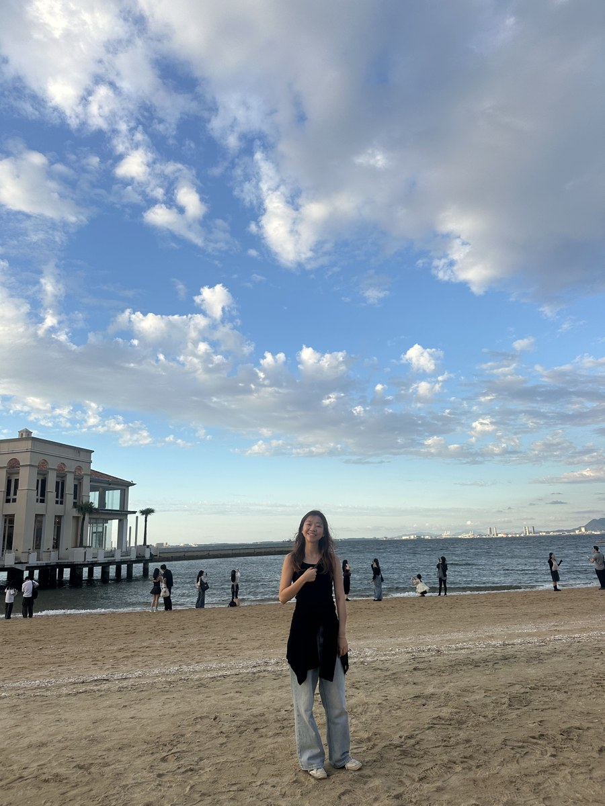
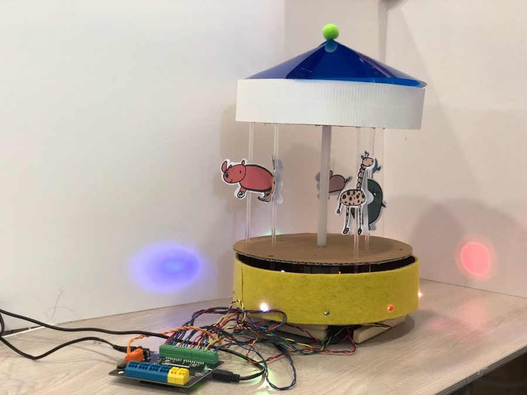
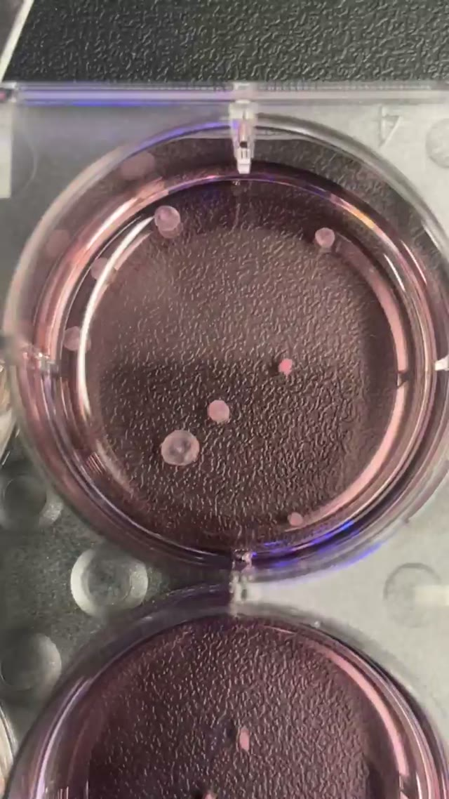
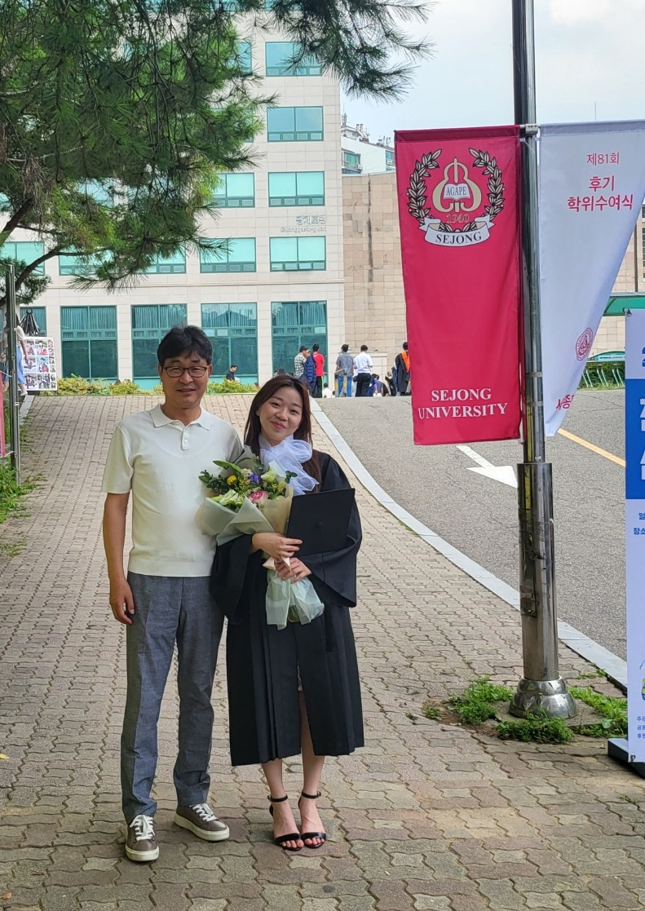
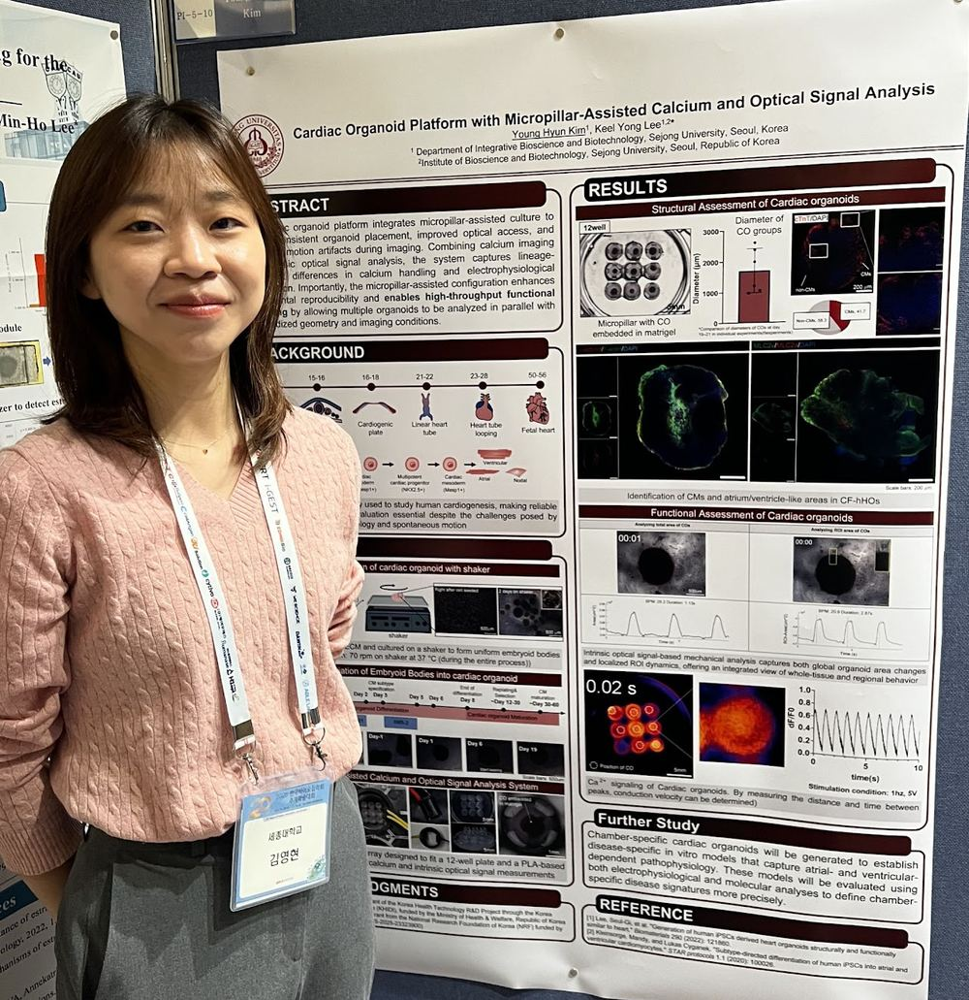
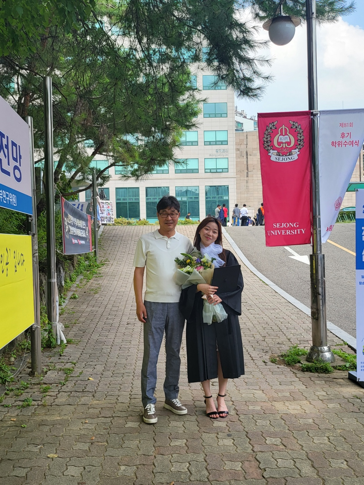

From moving robots
to beating tissues.
I’m Young Hyun Kim. I enjoy turning ideas into things that move—and helping others understand how they work. Before working with living cells, I built educational robots, drawing inspiration from museums, art exhibitions, and musicals.
Years later, a biohybrid fish powered by cardiac tissue caught my attention: living cells were doing the job I had once given to motors. That connection drew me toward cardiac tissue engineering. Today, I bring the same curiosity to building tissues, developing tools, and learning alongside others.
Make something. Learn how it works. Share what you discover.

Turning Points
From building robots to engineering living systems.
-
2017–2019 · Robotics & education
Learning by making.
At CreArtBot, I built interactive robots and taught robotics and STEAM workshops. Turning an idea into something that moved taught me to build, test, and explain a system.
Explore the making projects →
Hands-on robotics education · CreArtBot -
Oct 2022–Aug 2023 · Undergraduate research assistant
From machines to living systems.
As one of the lab’s first three members, I established its initial protocol for making cardiac organoids from human iPSCs. I also built 3D skeletal muscle tissues from C2C12 cells and applied cyclic stretch to study maturation.
See the cardiac models →
Cardiac organoids in culture -
August 2023 · Sejong University
Bachelor’s graduation
B.Eng. in Integrative Bioscience and Biotechnology. After exploring robotics, education, and undergraduate research, I continued into graduate study to work more deeply with living systems.

Bachelor’s graduation with my father · August 2023 -
Sep 2023–Aug 2026 · Graduate research assistant
Building the tissue and the tools.
For my master’s thesis, I generated atrial- and ventricular-like cardiac organoids and developed iCAMAnalyzer to compare their calcium signals and contractile motion.
Explore the analysis platform →
Sharing the work · Korea BioChip Society, 2025 -
August 2026 · Sejong University
Master’s graduation
M.S. in Integrative Bioscience and Biotechnology. My thesis brought together cardiac organoid culture and quantitative analysis—building both the tissues and the tools to study their function.

Master’s graduation with my advisor · August 2026
Ph.D. training
I hope to use engineered cardiac models and quantitative physiology to study the mechanisms that shape normal and disease-associated cardiac function.
Before the Bench
Teaching robotics taught me that an explanation clear to me might not be clear to someone else. I built examples alongside learners and explained how sensors, controllers, and motors worked together. Training with BirdBrain Technologies in the United States helped me adapt my teaching to people with different levels of experience.
That experience still shapes how I mentor. As a teaching assistant and research mentor, I help students work through unfamiliar techniques, ask questions, and develop experiments and presentations of their own.
Photos, projects & workshop stories →Beyond the Lab
During my exchange semester in Lille, France, I learned to consider how ideas travel across languages and cultures. Museums, exhibitions, musicals, and travel give me ways to explore beyond my usual surroundings—and sometimes an idea for something to make next.
Places and moments from my travels →